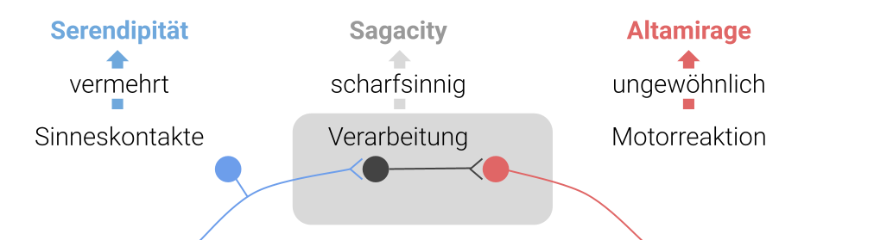
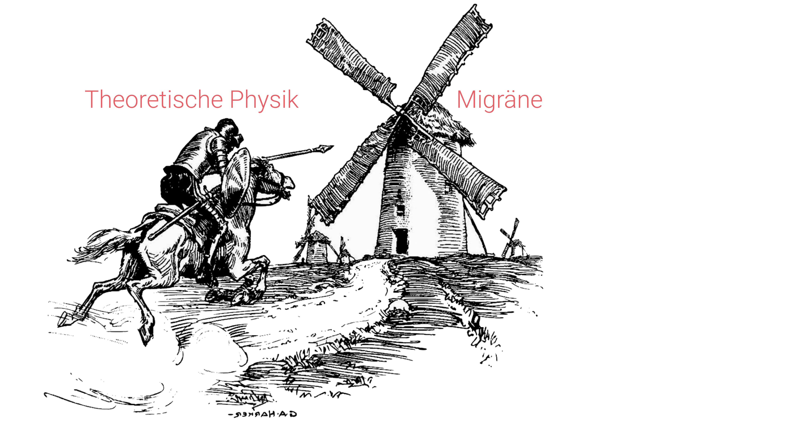

Altamirage ist eine Variante der glücklichen Entdeckungen, die bei ungewöhnlichen Tätigkeiten entsteht. Sie ist nicht nur weniger bekannt als die verwandte Idee der Serendipität, sondern kommt bisher fast nur im Bereich der Neurologie vor — dort, wo sie ihren natürlichen Ursprung hat.
Der Begriff Altamirage wurde vom Neurologen und Zen-Praktizierenden James H. Austin eingeführt, um eine Variante des glücklichen Zufalls zu beschreiben, die entsteht, wenn jemand ausgefallenen Tätigkeiten nachgeht und dabei über Serendipität hinausgeht. Serendipität bezeichnet das Zufallsprinzip, bei dem unerwartete Entdeckungen gemacht werden.
Ein typisches Beispiel für Serendipität ist die Entdeckung Amerikas auf der Suche nach einem neuen Seeweg nach Indien. Eine andere Variante benötigt zudem Scharfsinn, um „zufällig" zu entdecken, dass gerade etwas Interessantes passiert ist. Mit anderen Worten: die überraschende Wendung offenbart sich nicht von allein. Beispiele findet man bei Penicillin, der Mikrowelle, dem Post-it und vielem mehr. Als Neurologe verstand Austin, dass Serendipität — gewöhnlich durch Exploration und Scharfsinn hervorgerufen — nicht alle Variationen der zufälligen Entdeckung abdeckt.
Zufallsentdeckungen durch Sensorik und Motorik
Neurologen fühlen sich mit diesem Konzept wohl, da ein Großteil des Nervensystems, mit dem wir arbeiten, aus anatomisch getrennten sensorischen und motorischen Einheiten besteht. — James H. Austin, The Varieties of Chance in Scientific Research, 1979
Betont wird also, dass eine Entdeckung als Verarbeitungsprozess durch das Gehirn im ersten Schritt zwar immer auf der sensorischen Aufnahme von Signalen beruht. Doch muss auf die Verarbeitung abschließend auch eine motorische Reaktion folgen, um den Informationsfluss zu vervollständigen: Man sieht die Ampel von rot auf grün umschalten, erkennt die Bedeutung — und überquert die Straße.

Wenn die entscheidende Rahmenbedingung die spezifische Motoraktion ist — Austin spricht von „highly individualized action", mit der Betonung auf Aktion, nicht Reaktion — nennt man zufällige Entdeckungen Altamirage.
Für die Beispiele oben (Penicillin, Mikrowelle, Post-it) wird vor allem Scharfsinn benötigt; dieser wird als Sagacity bezeichnet. Die Entdeckung Amerikas war hingegen aus der „Bewegung" allein möglich. Columbus hatte jedoch nicht bloß blankes Glück, sondern war ein umtriebiger und mutiger Mensch. Eine Entdeckungsfahrt benötigt beides.
Neurologie kombiniert mit Literatur und Physik
Altamirage grenzt sich genau hier von den beiden Arten der Serendipität ab, weil es die Rolle der ungewöhnlichen Tätigkeit voraussetzt. Altamirage ist das Glück, das man erfährt, wenn man sich ein eigenes Terra incognita erst selbst erschafft — und dann auch eintritt.
Der Neurologe Andrew J. Lees ist mit dem Konzept durch seine Bücher Brainspotting und Mentored by a Madman in Verbindung gebracht worden. Oder auch der Neurologe Oliver Sacks. Beide hielten sich nicht an die klassisch evidenzbasierte Beschreibung der Krankheiten, sondern orientierten ihre ärztliche Tätigkeit an der Persönlichkeit des Patienten — und schrieben populärwissenschaftlich erscheinende Bücher, die auf die Neurologie zurückwirken. So kommt Lees zum Schluss: „Es ist an der Zeit, dass die Grenze zwischen Wissenschaft und Literatur — eine rein willkürliche Grenze — aufgehoben wird."
Auch mein Beispiel — meine berufliche Tätigkeit und der Grund, warum ich dieses Blog so nenne — hängt mit der Neurologie zusammen. Es geht aber nicht um eine Verbindung über Literatur, sondern um Physik. Wenn ich mit theoretischer Physik als methodischer Rahmenbedingung die Migräne erforsche, ist das sicher erstmal eine ungewöhnliche Tätigkeit.

Wohin soll das führen? Nun ist das Nicht-Wissen das Wesen der Forschung. Altamirage ist jedoch auch dieses quixotische Maslow-„Law of the Instrument"-zum-Feature-Erheben: Wenn man nur einen Hammer hat, sehen alle Probleme wie ein Nagel aus. Altamirage sagt: Na und? Feature it! Wenn man versucht, mit einem Hammer statt einem Maßband Längen zu messen, sind alle zufälligen Entdeckungen während dieser Tätigkeit im Bereich der Altamirage — und nicht der Serendipität.
Am Ende lässt sich das Wesen der Unterscheidung vielleicht so zusammenfassen:
- Serendipität ist, wenn der Zufall das Leben prägt.
- Altamirage ist, wenn das Leben den Zufall prägt.
Die vier Variationen des Glücks — einschließlich des blanken Glücks — werden hier beschrieben. Das Fazit überlasse ich Austin — vielleicht nicht so sehr Austin, dem Neurologen, sondern Austin, dem Zen-Praktizierenden:
Verlasse dich nicht auf dein Glück. Schließe Glück auch nicht aus. Das Wissen um die Arten des Glücks kann beitragen, dass man nichts tut, was Glück abschreckt. — James H. Austin, Neurologe und Zen-Praktizierender
Fußnoten & Quellen
- Austin, J. H. (1979). „The Varieties of Chance in Scientific Research." Medical Hypotheses 5 (7): 737–41.
- Araújo, R. (2022). „Altamirage and the Art of Clinical Neurology." The Lancet Neurology 21 (6): 510.
- Bähr, M. & Frotscher, M. (2003). Duus' Neurologisch-topische Diagnostik: Anatomie, Funktion, Klinik.